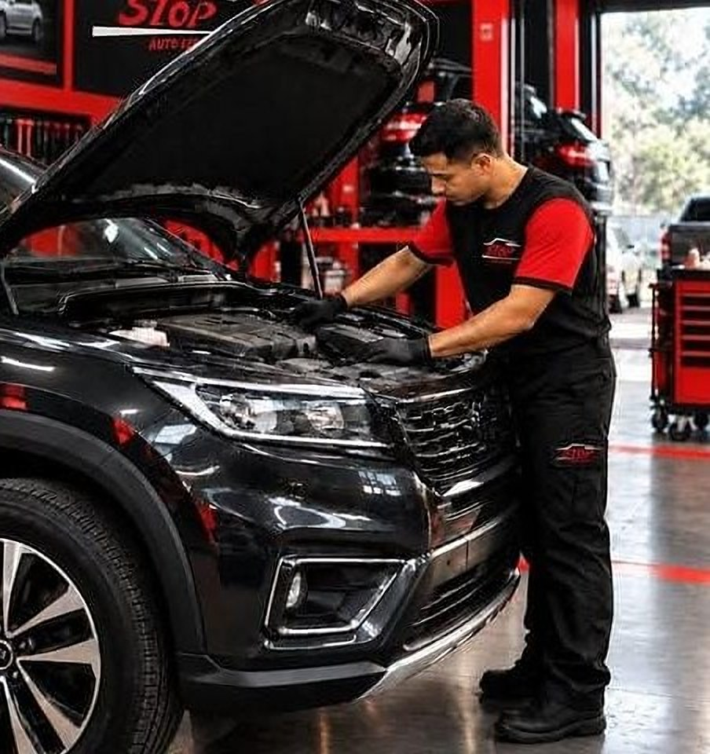
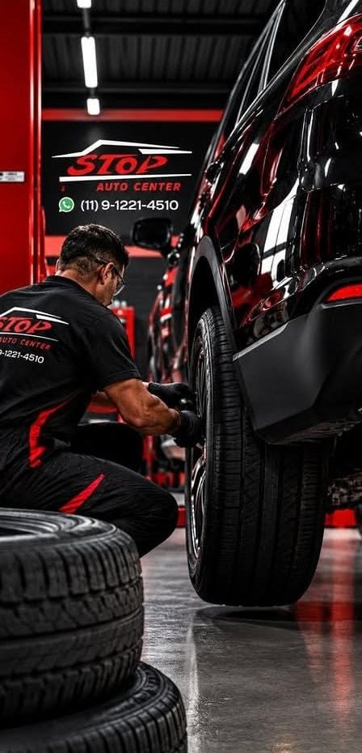

Revisão preventiva
Fluidos, filtros, freios, correias e itens de segurança conferidos no prazo certo, considerando o seu uso real e não só o do manual.
Mecânica automotiva no Jardim Ipês, Cotia
Revisão preventiva, pneus, alinhamento, suspensão e correia dentada. Você explica o que o carro está fazendo e a gente avalia com ele no elevador.

Manutenção preventiva e corretiva para quem roda todo dia em Cotia e na Raposo.
Fluidos, filtros, freios, correias e itens de segurança conferidos no prazo certo, considerando o seu uso real e não só o do manual.
Avaliação de sulcos, rachaduras e desgaste irregular, e troca quando chegou a hora.
Para o carro andar reto, sem vibrar no volante e sem gastar pneu antes da hora.
Amortecedores, buchas, pivôs e terminais verificados com o carro suspenso e a roda fora.
Troca no prazo do fabricante, antes que um rompimento cause dano grave ao motor.
Se o alinhamento foi feito e o desgaste continua, a causa costuma estar em outra peça. A gente procura onde o problema começa, não só onde ele aparece.
Da direção você só sente que “está diferente”. Com o carro suspenso e a roda fora, dá pra ver exatamente qual peça cedeu.
Por isso a avaliação começa pelo carro, e o orçamento vem depois, explicando o que precisa ser feito agora e o que pode esperar.

O intervalo grande do manual pressupõe estrada. Quem sai de Cotia e enfrenta a Raposo todo dia está no outro cenário. Calcule a sua próxima revisão pelo seu uso real.
Conte o que o carro está fazendo e combine o horário.
O carro sobe no elevador e a gente encontra a causa.
Você recebe o que precisa ser feito e aprova antes de começar.
Carro pronto e testado.
O que a gente explica todo dia na oficina, também no Instagram.
O alinhamento corrige os ângulos das rodas, mas não troca peça gasta. Buchas, pivôs, terminais ou amortecedores com folga desalinham o carro de novo em pouco tempo. Pressão errada nos pneus também causa desgaste irregular.
O prazo está no manual, em quilômetros ou anos, o que vencer primeiro, e varia de modelo para modelo. Em uso severo pode ser menor. Se não sabe quando foi a última troca, vale verificar antes que ela rompa.
Todo pneu tem um indicador de desgaste (TWI) dentro dos sulcos. Quando a banda chega nele, a profundidade está no mínimo legal de 1,6 mm. Rachaduras, bolhas na lateral e perda de aderência na chuva também são sinal de troca.
Se você pega trânsito anda-e-para, faz trajetos curtos todo dia, roda em terra ou trabalha com o carro, provavelmente sim. Nesse caso a revisão deve seguir o intervalo de uso severo do manual, que é menor.
Chame no WhatsApp para combinar o melhor horário. Assim o carro já tem lugar no elevador quando você chegar.
Conte o que está acontecendo com o carro e a gente responde pelo WhatsApp.